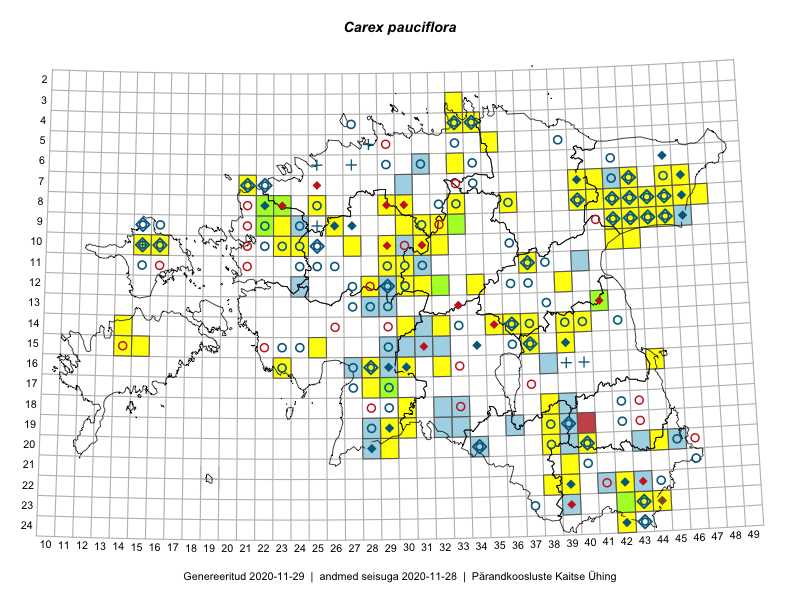

Carex pauciflora
Uuendatud: 2016-12-02
Kaardile koondatud taksonid: Carex pauciflora Lightf.

Kaart põhineb 68 kirjel, neist vaatlusi 67 ja eksemplare 1. Taksonit on leitud 47 ruudust.
Kuvatud viited 20 esimesele andmebaasikirjele, ülejäänud PlutoFis
- Ott Luuk, Peedu Saar: 2015-08-12: 23-43: ala
- Peedu Saar, Liina Oja: 2015-07-20: 08-44: ala
- Peedu Saar, Liina Oja: 2015-07-22: 08-45: ala
- Ott Luuk, Toivo Sepp: 2015-07-12: 10-31: ala
- Peedu Saar, Liina Oja: 2015-07-24: 09-45: ala
- Peedu Saar: 2015-08-11: 13-41: ala
- Peedu Saar, Ott Luuk: 2015-08-12: 23-42: ala
- Tiit Hallikma, Toomas Kukk: 2015-07-23: 07-41: ala
- Thea Kull: 2015-06-15: 10-16: ala
- Ott Luuk, Hannes Pehlak: 2015-07-24: 09-44: ala
- Ott Luuk, Hannes Pehlak: 2015-07-23: 07-40: ala
- Ott Luuk, Meeli Mesipuu: 2015-07-20: 08-41: ala
- Ott Luuk, Hannes Pehlak: 2015-06-09: 12-30: ala
- Ott Luuk, Hannes Pehlak: 2015-06-09: 12-31: ala
- Meeli Mesipuu, Ott Luuk: 2015-07-20: 08-41: GPS punkt
- Maria Abakumova: 2015-06-17: 16-32: ala
- Ott Luuk: 2015-08-03: 10-32: ala
- Ott Luuk: 2014-08-28: 10-16: ala
- Maret Gerz, Leena Gerz: 2015-08-08: 15-25: ala
- Ott Luuk, Toivo Sepp: 2015-08-18: 09-32: ala